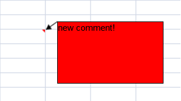
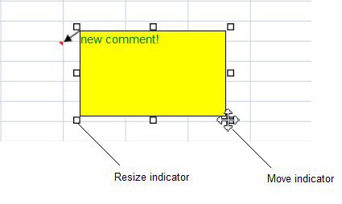
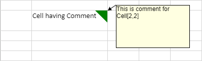

SpreadJS supports comments in cells. You can specify the appearance for the comment and comment icon. You can also resize, move, or edit the comment.
You can add a comment to a cell and specify the appearance. You can also resize, move, or edit the comment.

The following image displays the resize and move indicator icons. The resize icons are displayed when you select the comment. The move icon is displayed when the pointer is over the comment border.

You can lock the comment events or the comment text if the sheet options.isProtected method is set to true. The following table displays the comment property values and the result if the sheet is protected.
| Locked | LockText | Result |
| false | false | Actions on comment take effect; the comment can be edited |
| true | false | Actions on comment do not take effect; the comment can be edited |
| false | true | Actions on comment take effect; the comment cannot be edited |
| true | true | Actions on comment do not take effect; the comment cannot be edited |
Resizing a row or column can cause the comment's location and size to change based on the settings for the dynamicMove and dynamicSize methods. The following table displays the result of the dynamicMove and dynamicSize settings.
| DynamicMove | DynamicSize | Result |
| true | true | Comment is moved and sized with cells |
| true | false | Comment is moved, but not sized with cells |
| false | true or false | Comment is not moved or sized with cells |
You can cut, copy, or paste text in the comment if the comment is in edit mode. The comment is copied with the cell if you copy the cell.
The undo and redo actions apply if you cut, copy, or paste comment text, resize or move the comment, or change the comment's format.
The following code adds a comment to a cell and sets the color and display mode.
| JavaScript |
Copy Code
|
|---|---|
var comment = activeSheet.comments.add(5,5,"new comment!"); comment.text("new comment!"); comment.backColor("red"); comment.displayMode(GC.Spread.Sheets.Comments.DisplayMode.AlwaysShown); |
|
When you insert a comment, a small red triangle appears on the upper-right corner of the cell by default. You can change this default color and size of the comment icon by using the indicatorColor and indicatorSize methods.
The following image shows a spreadsheet cell with a green comment icon.

The following code adds a comment to a cell and sets the color and size for the comment icon.
| JavaScript |
Copy Code
|
|---|---|
// create comment var comment = new GC.Spread.Sheets.Comments.Comment(); comment.text("This is comment for Cell[2,2]"); // set indicatorSize comment.indicatorSize(25); // 6 as default // set indicatorColor comment.indicatorColor('green'); // 'red' as default // add comment activeSheet.comments.add(2, 1, comment); |
|